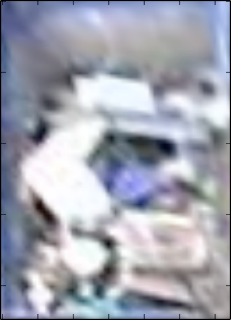
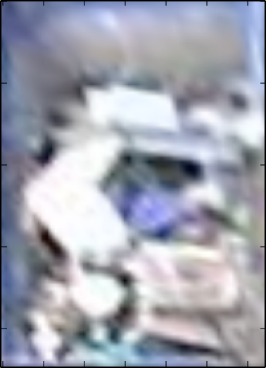
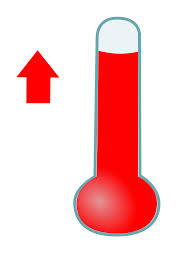
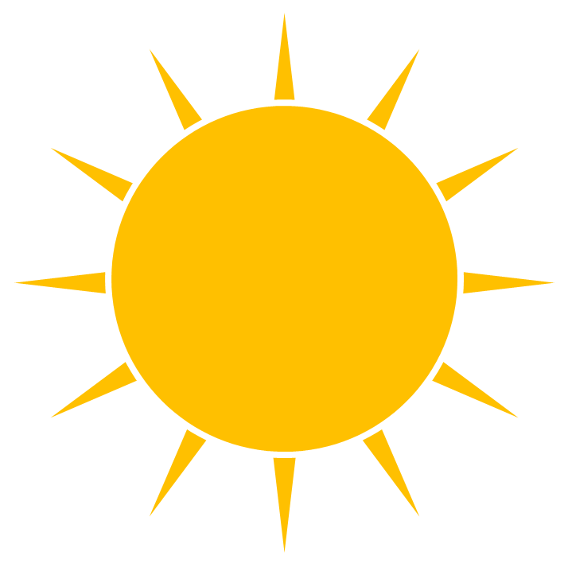
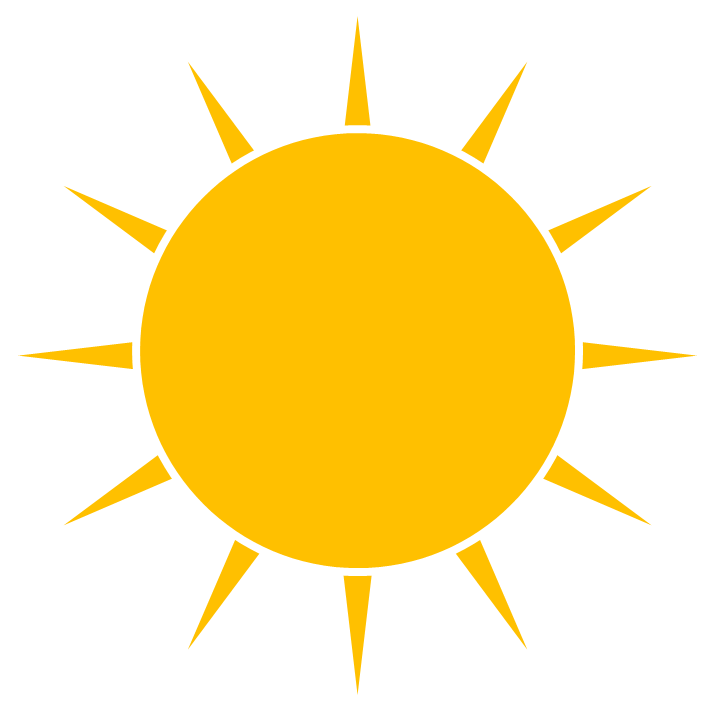

Une décheterie

Application mobile

Positifs

Comptage des voitures

Niveau des bennes
 →
 → 4
→
 → 4
nous mesurons aussi:
 

pour avoir plus de contexte pour nos prédictions
Thanks !
http://ants.builders
 This project is sponsored by Région Aquitaine
This project is sponsored by Région Aquitaine
@beingAnts
/